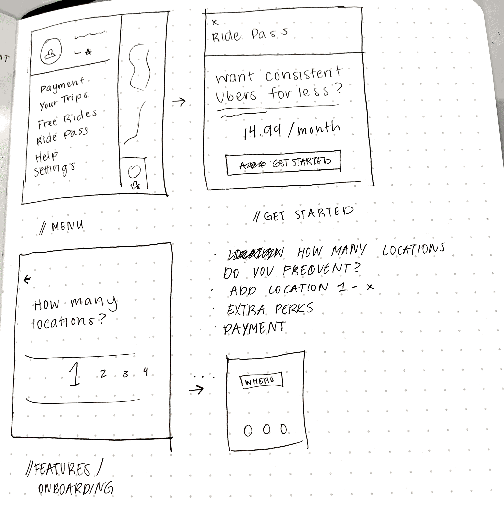
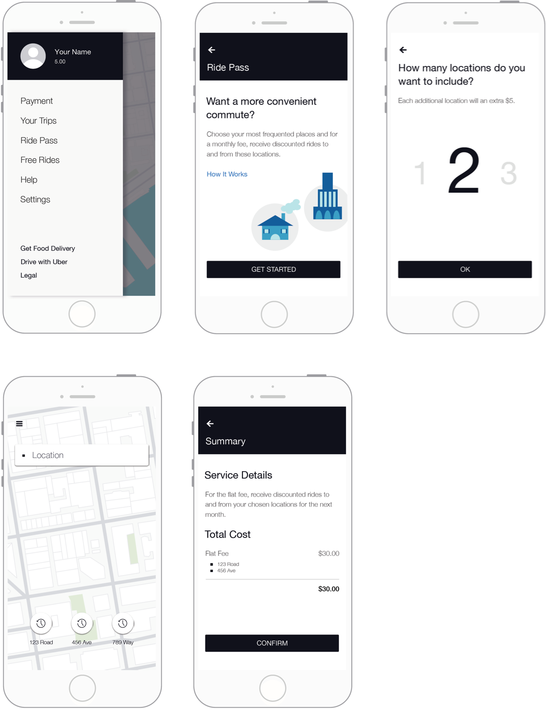

Problem Space
Riders and drivers care about price, convenience, and a good experience. With the rise of other ride-sharing applications, how do we ensure user loyalty to Uber?
We do so by creating a superior experience than incentivizes customers to choose Uber for the long-run.
Brainstorm
Rewards Program
Ride Pass
Group Commute
Route Feedback
Executive Summary
Uber’s story started with a simple “what if.” Since then, it has expanded to reach 75 million users across the globe, inspiring the birth of numerous, similar companies. While Uber still dominates the market, other companies have been slowly gaining more traction.
in 2017, Uber created Ride Pass, a service that allows riders to pay an activation fee to unlock a flat-fare for a period of time. However, very few users are aware of its existence, and even fewer are actually able to purchase it. Currently, the feature lacks a specific target audience. It attracts users who use ride sharing applications often, as it provides cheaper rides. By creating situation-based ride passes, we can attract and target specific audiences, starting with commuters.
UberPool and UberExpress provide cheaper rides for passengers travelling solo or with a friend, with the hope of attracting customers that otherwise would not have used Uber. However, the length and timing of rides is unpredictable, and therefore may not be ideal for a commuter.
By providing a Ride Pass targeted toward commuters, we can provide cheaper rides for those constantly using ride-sharing applications to and from work. Users that buy the Ride Pass will then be more likely to solely use Uber for the bought time period.
Opportunity
Time is money. Commuters want easily accessible, affordable, and efficient rides to and from work everyday. In Seattle 2016, nearly 50% of people make downtown commute trips take public transportation (Commute Seattle Center City Mode Split Survey), a rate that has been steadily increasing over the past decade. By making fares closer to those of public transportation, UberExpress is disturbing the market. However, it loses the reliability in both time and cost for riders. By implementing Ride Pass for commuters, we may provide an alternative that is more affordable than daily UberX’s. Instead of risking volatile ride times for a cheaper cost, riders may instead purchase a Ride Pass for commuting, allowing them access to flat-rate fares to and from work.
Ride Pass will fit into Uber’s current portfolio with a goal similar to that of UberPool and UberExpress. Uber views Pool and Express as longterm investments, despite losing more money than normal rides now. In the long-run, Ride Pass will inspire more brand loyalty. If a user hypothetically pays a set amount for a flat-rate fare for a month, the user will solely take Ubers in order to gain more value from the one-time payment.
Ride Pass for commuters is solely the beginning. We can expand to numerous other scenarios. For example, large conferences. Conference planners may pay a fee so that all attendees will receive rides to and from the location at a discounted rate. By digging in to the common use cases in which Ubers are being used, we may identify and focus on making Uber more accessible and preferable to large user groups.
Wireframes
Low Fidelity
High Fidelity
Conclusion
Ride Pass’s primary value lies in its ability to attract and retain users. The existence of Ride Pass gives Uber the opportunity to form partnerships with event planners and companies, thus promoting and creating incentives for brand loyalty.
With the goal of creating brand loyalty in mind, Ride Pass’s success may be tracked by measuring its effect on its users and how their use habits have changed over a period of time. We may track if they continue to purchase Ride Pass, churn rate and reason behind leaving, and its effect on Uber’s other services.
Ride Pass has the potential to scale and expand to encompass numerous use cases, depending on the response of the users. A feature like Group Commute could be incorporated with Ride Pass for commuters in the future in order to promote carpooling.